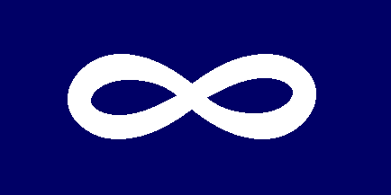

The Metis are a group of people who have a mixed European and First Nations ancestry. Developing an identity in the mid 16th century during the fur trade, the Metis have since grown to be one of the three recognized Aboriginal groups in Canada.
This is the Metis flag , a representation of two cultures merging together to form a fluid Metis Nation.
For more information on the Metis and their history, click on the links.